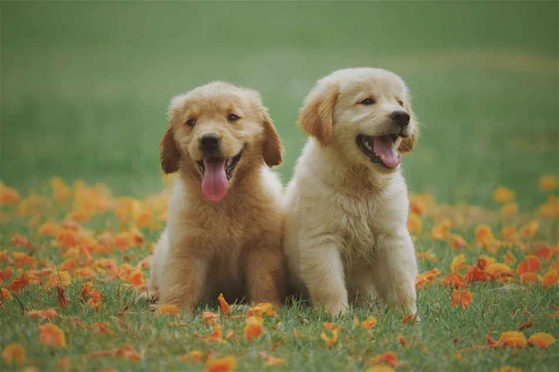

hello!
This is my first practise
The Golden Retriever is a Scottish breed of retriever dog of medium size. It is characterised by a gentle and affectionate nature and a striking golden coat. It is commonly kept as a pet and is among the most frequently registered breeds in several Western countries

another dogs!
The dog is a domesticated descendant of the wolf. Also called the domestic dog, it is derived from extinct Pleistocene wolves, and the modern wolf is the dog's nearest living relative. The dog was the first species to be domesticated by human
my skills
| funky | 😎 |
| sleepy | 😴 |